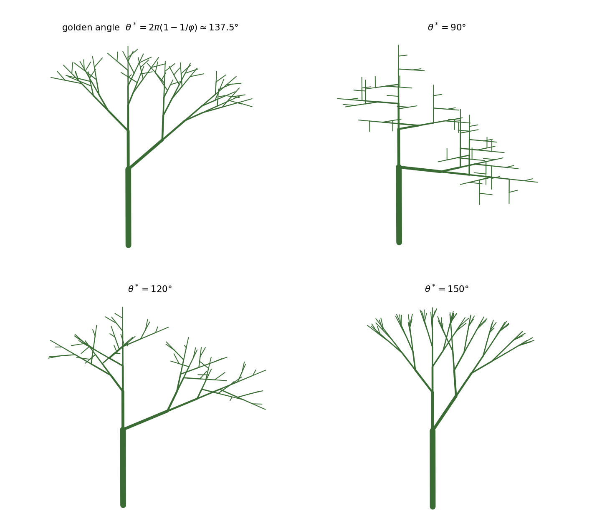

Generative Trees
Ideal tree outlines from repeated rotations, grown in continuous time by noisy branches chasing their targets.
The model has two parts. First an ideal tree outline is constructed: a binary tree in which the branch at depth $i$ has length $1/(i+1)$, and each branch's direction is obtained from its parent's local frame by composing 3D rotations through a fixed branching angle $\theta^*$. The default $\theta^* = 2\pi(1 - 1/\varphi) \approx 137.5°$ is the golden angle, the irrational rotation that appears throughout phyllotaxis. Because every branch's frame is rebuilt from the root by walking its binary address, the outline is fully determined by $\theta^*$ and the depth.

Continuous-time growth
The outline is then used as a scaffold for growth. Each living branch tip carries a position $\mathbf{p}$, a heading $\mathbf{a}$, a speed $v$, and a thickness $w$. The tip moves along its heading, $\dot{\mathbf{p}} = v\,\mathbf{a}/\lVert\mathbf{a}\rVert$, while the heading relaxes toward the direction of its target node: with $\mathbf{t} = \mathbf{p} - \mathbf{p}_{\text{target}}$, $$\dot{\mathbf{a}} \;=\; \mathbf{a} \;-\; \frac{\mathbf{a}\cdot\mathbf{t}}{\lVert\mathbf{t}\rVert^{2}}\,\mathbf{t} \;+\; \sigma\, w\, \boldsymbol{\xi}(t),$$ where $\boldsymbol{\xi}$ is temporally correlated ($1/f$) noise scaled by the branch thickness, so young thick branches wander and fine twigs track their targets. Thickness decays as $\dot{w} = -w^{1.3}$. Once a branch's grown length $\ell$ passes its ideal length $\ell^*$, it splits with probability $\tfrac{1}{2}\left(\tanh\!\big(\beta\,(\ell - \ell^*)\big) + 1\right)$ per step, handing its position, speed, and thickness to two children aimed at the next nodes of the outline.
The simulation below runs this growth live. Drag the view to rotate it, change the branching angle or depth (both rebuild the scaffold and restart), and adjust the noise to trade between faithful and gnarled trees.
Source code
- Trees.py — ideal-outline construction and the vectorized growth simulation (requires
numpy,networkx,colorednoise)